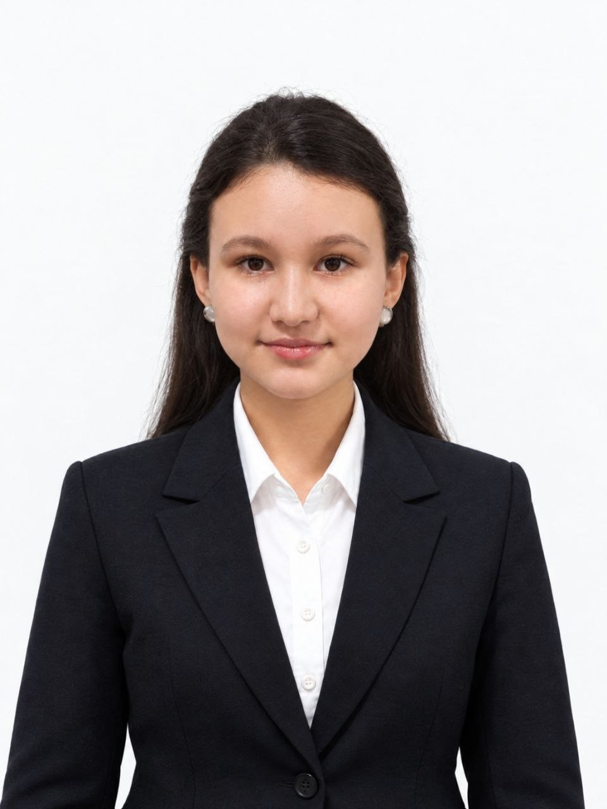

VOLONTYORLIK • LIDERLIK • JURNALISTIKA • TA'LIM
Sirdaryo viloyati Guliston shahar 11-umumiy o'rta ta'lim maktabining 9-"B" sinf o'quvchisi (15 yosh). Ko'ngillilarni birlashtiruvchi lider, maktab radiouzeli va jurnalistika muxbiri.

2023–2024 o'quv yilida rus tili fan olimpiadasida yuqori bilim ko'rsatib, faxrli 1-o'rinni egallagan.
Sog'lom turmush tarzi targ'ibotchisi, suzish musobaqasida sovrinli 2-o'rin sohibi.
Bir yildan ortiq vaqt davomida maktab radiouzeli boshlovchisi, yosh muxbir va san'at yo'nalishi faoli.
Maktabda xayriya, ekologik va ijtimoiy yordam guruhlarini shakllantirish.
Radiouzel va jurnalistika orqali o'quvchilarning ijtimoiy tashabbuslarini keng yoritish.
Yangi g'oyalarni qog'ozda qoldirmay, jamoa bilan birga amaliy loyihalarga aylantirish.
Maktab o'quvchilaridan iborat doimiy ko'ngillilar tarmog'ini kengaytirish va ijtimoiy aksiyalar o'tkazish.
Maktab radiouzeli va media guruhini rivojlantirib, har bir ijtimoiy loyihani keng jamoatchilikka yetkazish.
Jamoaviy ishlash asosida maktab va shahar yoshlari muammolarini hal qiluvchi amaliy tashabbuslarni ishga tushirish.